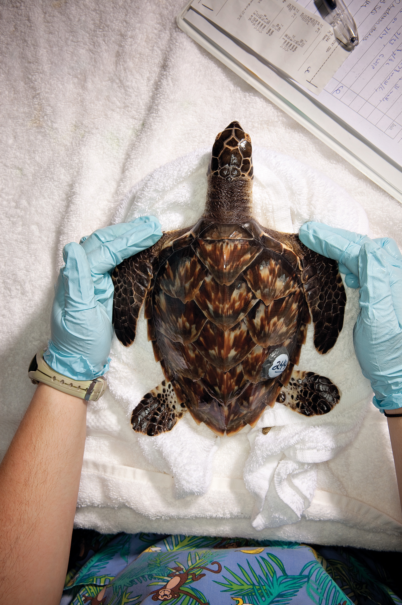
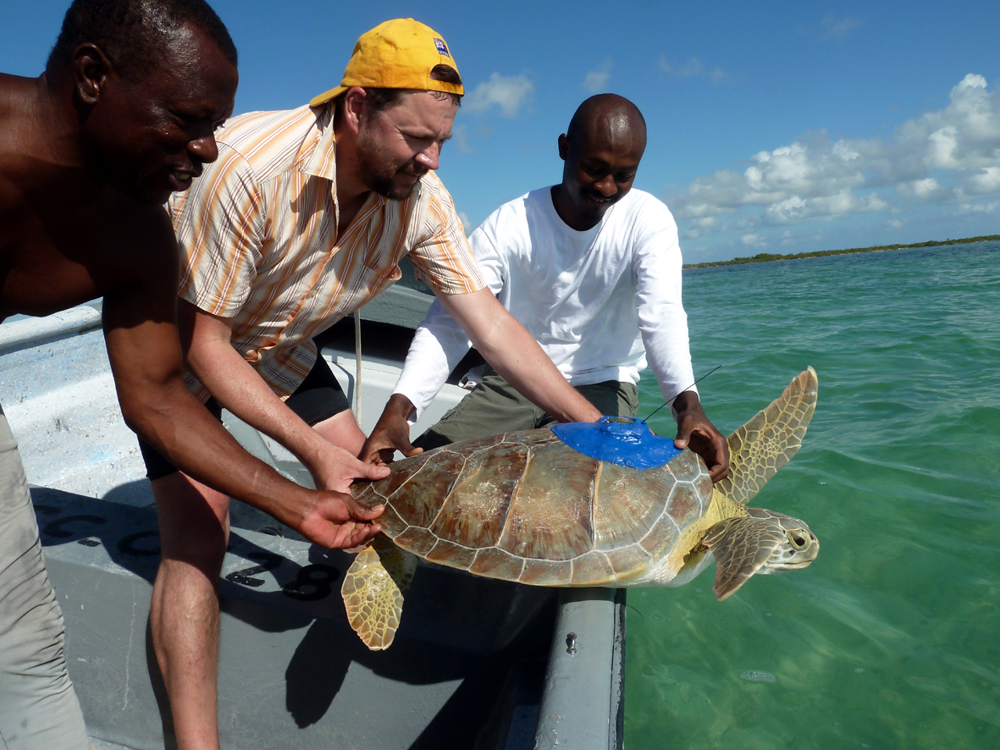
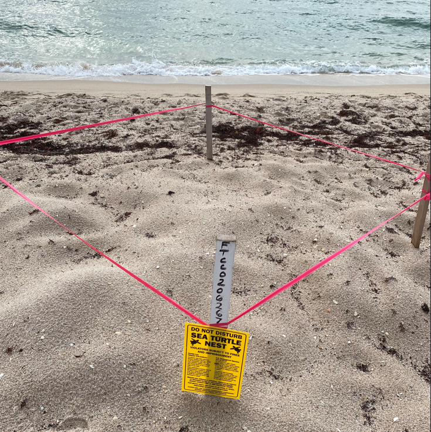
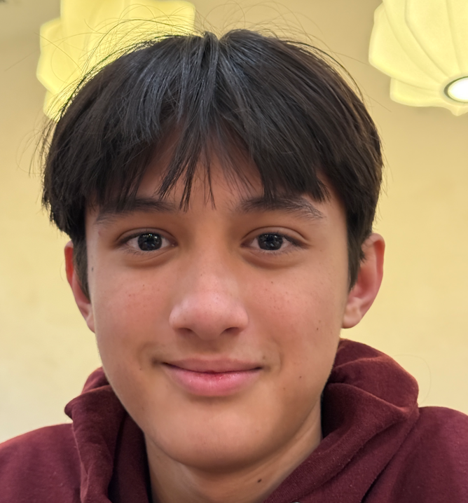
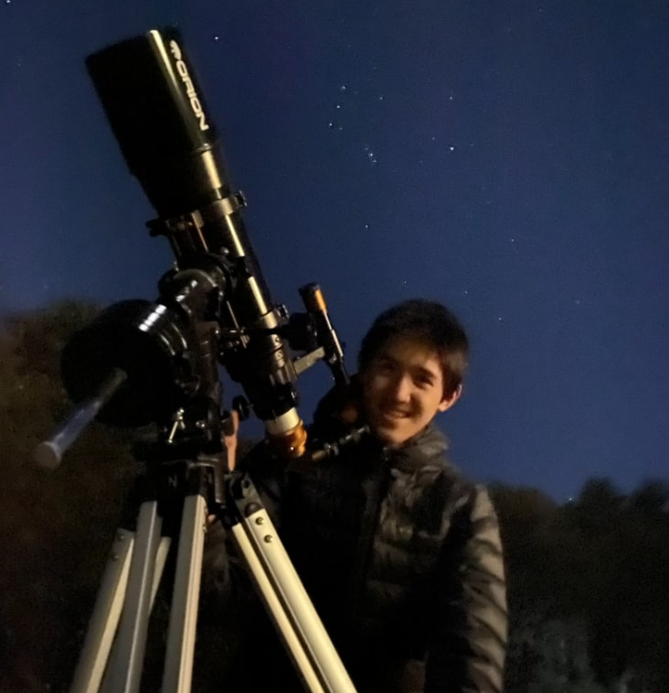

Marine Turtle Foundation is a student-led group started by Wesley Deklich after seeing hatchlings on beaches in the Yucatan and Florida. We recruit volunteers, run a small number of fundraisers, and send the money to existing turtle centers. We are not a registered 501(c)(3), we do not have a published EIN, and donations to us are not tax-deductible.
Since starting, about 100 people have volunteered with us. We have held four events, including a charity volleyball tournament, and raised about $4,500, which we passed to sea turtle centers in Cancun and Florida. That is the whole operation in one paragraph. Details: Events.



We recruit volunteers, run cleanups and fundraisers, and point people toward established programs such as Flora, Fauna y Cultura de Mexico on the Riviera Maya.
We are not a large NGO, not a Florida 501(c)(3), and not the operator of the national turtle hospitals. Field science is done by the partner programs we support.
About $4,500 raised so far, passed through to Cancun-area and Florida turtle centers. See Donate for how giving actually works.

President
Helps run events, outreach, and day-to-day coordination for this student-led group.

Founder
Founder. Student who started MTF, recruited volunteers, organized the four fundraising events, and sends proceeds to turtle centers in Cancun and Florida. wesleydeklich.me
Volunteer coordinator
Helps coordinate volunteers connected to Yucatan / Riviera Maya work. Not a claim of thousands of staff.